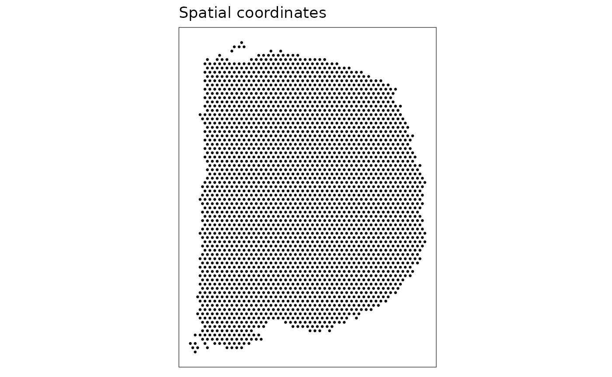
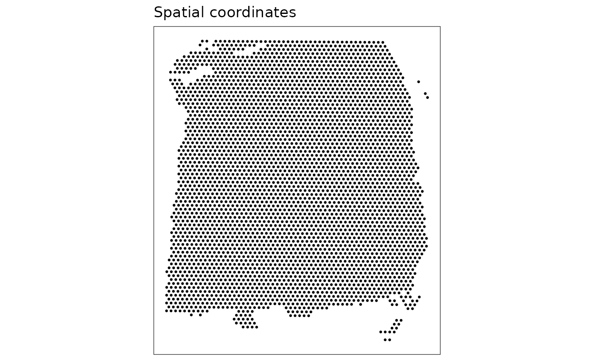
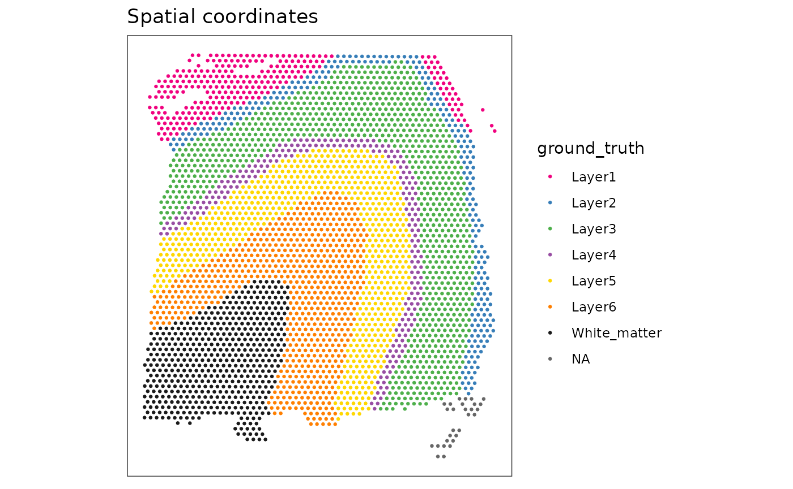

vignettes/STdata.Rmd
STdata.RmdThe STdata package provides access to a collection of spatially resolved transcriptomics datasets, which have been formatted into the SpatialExperiment Bioconductor object class.
These datasets have been collected from various publicly available sources, and will cover several technological platforms.
We provide these datasets as SpatialExperiment objects to make them easier to access, so that we and others can use them for examples, demonstrations, tutorials, and other purposes.
The current version of the package contains the following datasets, both from the 10x Genomics Visium platform.
The package is under active development, and we will add several additional datasets in the near future (see also Challenges discussed at Birds-of-a-Feather workshop).
mouse_coronal (10x Genomics Visium): a single coronal section from the mouse brain, spanning one hemisphere. Previously provided by 10x Genomics from their website.
human_DLPFC (10x Genomics Visium): a single sample (sample 151673) from our previously published dataset consisting of 12 samples from the human dorsolateral prefrontal cortex (DLPFC) in the human brain, from 3 neurotypical donors. The original dataset is available via the spatialLIBD Bioconductor package, and is described in our paper Maynard and Collado-Torres et al. 2020.
The latest versions of the SpatialExperiment and STdata packages can be installed from GitHub. These will be moved to Bioconductor (devel) in the near future.
In the code below, we have commented out the installation code, so that this is not automatically run when we compile the workshop materials. However, on your own system, you can un-comment these lines and run them to install the packages if necessary.
# install SpatialExperiment package (note "devel" branch)
# remotes::install_github("drighelli/SpatialExperiment", ref = "devel")
# install STdata package
# remotes::install_github("lmweber/STdata")Next, we run a short example showing how to load one of the datasets from the STdata package. This will be loaded as a SpatialExperiment object. Then, we inspect the object dimensions and structure.
# load data object
spe <- load_data("mouse_coronal")
# inspect data object
spe## class: SpatialExperiment
## dim: 32285 2702
## metadata(0):
## assays(1): counts
## rownames(32285): ENSMUSG00000051951 ENSMUSG00000089699 ...
## ENSMUSG00000095019 ENSMUSG00000095041
## rowData names(3): gene_id gene_name feature_type
## colnames(2702): AAACAAGTATCTCCCA-1 AAACAATCTACTAGCA-1 ...
## TTGTTTCCATACAACT-1 TTGTTTGTGTAAATTC-1
## colData names(9): barcode_id array_row ... y_coord in_tissue
## reducedDimNames(0):
## altExpNames(0):
## spatialCoordsNames(3) : x_coord y_coord in_tissue
## inTissue(1): 2702
## imgData(6): sample_id image_id ... height scaleFactor
dim(spe)## [1] 32285 2702
assayNames(spe)## [1] "counts"
rowData(spe)## DataFrame with 32285 rows and 3 columns
## gene_id gene_name feature_type
## <character> <character> <character>
## ENSMUSG00000051951 ENSMUSG00000051951 Xkr4 Gene Expression
## ENSMUSG00000089699 ENSMUSG00000089699 Gm1992 Gene Expression
## ENSMUSG00000102331 ENSMUSG00000102331 Gm19938 Gene Expression
## ENSMUSG00000102343 ENSMUSG00000102343 Gm37381 Gene Expression
## ENSMUSG00000025900 ENSMUSG00000025900 Rp1 Gene Expression
## ... ... ... ...
## ENSMUSG00000095523 ENSMUSG00000095523 AC124606.1 Gene Expression
## ENSMUSG00000095475 ENSMUSG00000095475 AC133095.2 Gene Expression
## ENSMUSG00000094855 ENSMUSG00000094855 AC133095.1 Gene Expression
## ENSMUSG00000095019 ENSMUSG00000095019 AC234645.1 Gene Expression
## ENSMUSG00000095041 ENSMUSG00000095041 AC149090.1 Gene Expression
colData(spe)## DataFrame with 2702 rows and 9 columns
## barcode_id array_row array_col pxl_col_in_fullres
## <character> <integer> <integer> <integer>
## AAACAAGTATCTCCCA-1 AAACAAGTATCTCCCA-1 50 102 7237
## AAACAATCTACTAGCA-1 AAACAATCTACTAGCA-1 3 43 1611
## AAACACCAATAACTGC-1 AAACACCAATAACTGC-1 59 19 8315
## AAACAGAGCGACTCCT-1 AAACAGAGCGACTCCT-1 14 94 2927
## AAACCGGGTAGGTACC-1 AAACCGGGTAGGTACC-1 42 28 6280
## ... ... ... ... ...
## TTGTTGTGTGTCAAGA-1 TTGTTGTGTGTCAAGA-1 31 77 4963
## TTGTTTCACATCCAGG-1 TTGTTTCACATCCAGG-1 58 42 8195
## TTGTTTCATTAGTCTA-1 TTGTTTCATTAGTCTA-1 60 30 8434
## TTGTTTCCATACAACT-1 TTGTTTCCATACAACT-1 45 27 6639
## TTGTTTGTGTAAATTC-1 TTGTTTGTGTAAATTC-1 7 51 2089
## pxl_row_in_fullres sample_id x_coord y_coord in_tissue
## <integer> <character> <integer> <numeric> <logical>
## AAACAAGTATCTCCCA-1 8229 Sample01 8229 2755 TRUE
## AAACAATCTACTAGCA-1 4169 Sample01 4169 8381 TRUE
## AAACACCAATAACTGC-1 2518 Sample01 2518 1677 TRUE
## AAACAGAGCGACTCCT-1 7678 Sample01 7678 7065 TRUE
## AAACCGGGTAGGTACC-1 3137 Sample01 3137 3712 TRUE
## ... ... ... ... ... ...
## TTGTTGTGTGTCAAGA-1 6508 Sample01 6508 5029 TRUE
## TTGTTTCACATCCAGG-1 4100 Sample01 4100 1797 TRUE
## TTGTTTCATTAGTCTA-1 3275 Sample01 3275 1558 TRUE
## TTGTTTCCATACAACT-1 3068 Sample01 3068 3353 TRUE
## TTGTTTGTGTAAATTC-1 4719 Sample01 4719 7903 TRUE
spatialCoords(spe)## DataFrame with 2702 rows and 3 columns
## x_coord y_coord in_tissue
## <integer> <numeric> <logical>
## AAACAAGTATCTCCCA-1 8229 2755 TRUE
## AAACAATCTACTAGCA-1 4169 8381 TRUE
## AAACACCAATAACTGC-1 2518 1677 TRUE
## AAACAGAGCGACTCCT-1 7678 7065 TRUE
## AAACCGGGTAGGTACC-1 3137 3712 TRUE
## ... ... ... ...
## TTGTTGTGTGTCAAGA-1 6508 5029 TRUE
## TTGTTTCACATCCAGG-1 4100 1797 TRUE
## TTGTTTCATTAGTCTA-1 3275 1558 TRUE
## TTGTTTCCATACAACT-1 3068 3353 TRUE
## TTGTTTGTGTAAATTC-1 4719 7903 TRUE
imgData(spe)## DataFrame with 2 rows and 6 columns
## sample_id image_id data width height scaleFactor
## <character> <character> <list> <integer> <integer> <numeric>
## 1 Sample01 lowres 576 600 0.0510334
## 2 Sample01 hires 1921 2000 0.1701114We can also create a simple plot of the dataset, to check that it has been loaded correctly. We can use plotting functions available in the ggspavis package.
The ggspavis package is also available from GitHub, so we install this first (if not already installed).
Then, we load the package, and create a plot.
# install ggspavis package
# remotes::install_github("lmweber/ggspavis")
# create plot
plotSpots(spe)
The above plot does not show much – only the layout of the Visium spots under tissue in this sample. This is useful as a check that the dataset has been loaded correctly, but is not a very interesting plot.
Next, we will create a more interesting plot showing ground truth cluster labels for a different dataset, and then continue with an exercise to modify this plot to display different information.
For this exercise, we will use the “human DLPFC” dataset (which contains ground truth cluster labels).
# load data object
spe <- load_data("human_DLPFC")
# create basic plot
plotSpots(spe)
# create plot showing ground truth cluster labels
plotSpots(spe, discrete = "ground_truth", palette = "libd_layer_colors")
For the exercise, try to modify this plot to show a continuous color gradient of total UMI counts per spot (instead of ground truth cluster labels).
Below are some hints for how to do this.
spe object to check how the data is stored (e.g. assays, row data, column data, spatial coordinates)?plotSpots) to check the required arguments